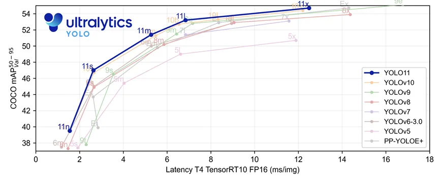
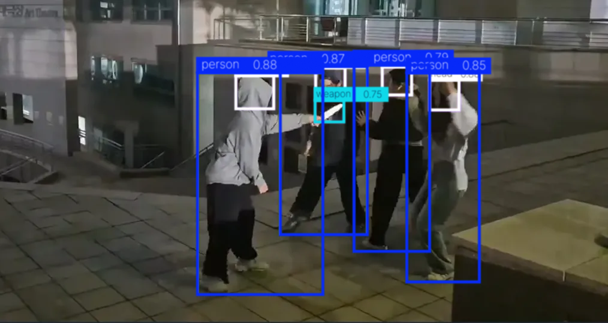

NURINOON은 AI 기술을 활용해 CCTV 영상을 실시간 분석하고, 위험 상황을
즉시 감지하여 사용자의 신속한 대응을 가능하게 하는 스마트 모니터링
시스템입니다.
💡 프로젝트 소개
경찰은 치안 강화를 위해 도보 순찰을 확대하고 있습니다. 그러나 인력
중심의 순찰은 긴급 상황 발생 시 즉각적인 대응이 어렵고,
시민의 신고에 의존하는 사후 대응 체계로 인해 신고되지
않은 사건에는 대처가 불가능한 문제가 있습니다. 저희는 이러한 문제에
주목하여,
AI 기반 실시간 위험 감지 및 사건 관리 시스템인
NURINOON(누리눈)을 개발하였습니다.
CCTV
영상을 실시간으로 분석하여 화재, 폭행, 쓰러짐, 흉기난동 등
다양한 위험 상황을 감지하고, 사건 유형에 따라
우선순위를 지정해 긴급한 상황을 빠르게 인지하고 대응할 수 있도록 알림을
제공합니다.
서비스 강점
✅ NURINOON은 실시간 스트리밍 기능을 통해 관할
지역의 CCTV를 모니터링하고 현장 상황을 즉시 파악할 수 있습니다.
✅ NURINOON은 AI를 활용한 모니터링 자동화를 통해
인력 부담을 줄이고, 보다 빠르고 정확한 대응을 가능하게 함으로써 공공
안전을 지속적으로 향상시킵니다.
✅ NURINOON은 사건 데이터를 축적하여
시간대별 · 장소별 경향을 시각화함으로써 효율적인 순찰
인력 배치와 치안 전략 수립에 기여합니다.
💡 기능 소개
NURINOON의 사용 흐름은 다음과 같습니다.
CCTV 영상이 실시간으로 송출됨과 동시에 AI 모델에 전달되어 위험 행동을
탐지합니다.
위험 행동이 감지되면 실시간으로 알림이 전송되고, 사용자는 상황을
확인한 후 적절한 대응을 선택하게 됩니다. 이때 출동과 미출동 2가지 대응
방안이 존재합니다.
일련의 대응 과정이 모두 끝나면, 해당 사건은 종료 처리되며, 종료된
사건은 누적되어 추후 사건 조회 및 통계 자료로 활용됩니다.
👁️🗨️ AI 기반 실시간 위험 행동 감지
AI를 기반으로 CCTV 데이터를 실시간 분석하여 위험 행동을
감지합니다. 화재, 실신, 폭행, 흉기 난동 등 다양한 위험 행동을
감지할 수 있습니다.
🚨 위험 행동 분류 및 알림
위험도에 따라 단계를 구분하여 위험 행동 감지 알림을 전송합니다.
1단계 위험은 푸쉬 알림으로, 2단계 위험은 모달창을 통해 위험 상황을
알립니다. 사용자는 상황에 따라 우선순위가 높은 사건부터 해결할 수
있습니다.
🚔 출동중인 사건 관리
출동중인 사건을 모아서 관리하고 확인할 수 있습니다. 사건 발생
시각, 위치 등의 정보를 제공하며 '영상 확인' 버튼을 통해 위험
행동이 감지된 CCTV 화면을 다시 확인할 수 있습니다.
👍 AI 성능 개선을 위한 사건 유형 피드백
사건 발생 유무, 위험 분류에 대한 오탐 여부 등을 선택하여 사건 유형
피드백을 진행합니다. 피드백이 반영된 데이터를 재학습시켜 오탐률을
줄이고 정확도를 높일 수 있습니다.
📝 사건 기록 조회
종결된 사건을 모아서 확인할 수 있도록 '사건 기록 조회' 기능을
제공합니다. 필터링 및 검색 기능으로 원하는 사건을 쉽게 찾을 수
있습니다.
📊 통계 차트 제공
누적된 사건 데이터를 기반으로 시간대별, 장소별, 유형별 등 다양한
통계 그래프를 제공합니다. 그래프를 통해 사건 경향성을 파악할 수
있으며, 지도의 클러스터링 기능을 통해 사건 다발 지역을 쉽게 인식할
수 있습니다.
💡 기술적 강점
저지연 실시간 스트리밍 (RTMP → HLS 변환)
미디어 서버는 RTMP를 사용하여 실시간 스트리밍 영상을 처리하고, 이를
HLS로 변환하여 웹과 모바일 환경에서
저지연 및 안정적인 스트리밍을
제공합니다. 이를 통해 실시간 위험 감지 및 빠른 대응이 요구되는
상황에서 즉각적인 피드백을 가능하게 하여, 지연을
최소화하면서도 브라우저 호환성을 보장합니다.
이중 AI 모델을 통한 효율적 위험 감지
1차 AI 모델은 실시간으로 정적 위험을 빠르게 감지하고,
관련된 프레임만을 2차 모델에 전달하여 실시간성과
시스템 자원 효율성을 극대화합니다. 2차 모델은 영상
기반으로 정밀한 동적 위험 행동을 분석하여,
높은 분류 정확도를 제공합니다.
이중 AI 모델 구조는 실시간성과 분석 정확도를 모두
충족시키며, 효율적이고 정확한 위험 감지를 가능하게
합니다.
YOLOv11n과 X3D 모델을 통한 위험 감지 최적화
누리눈은 자체 학습을 통해 위험 행동 감지에 최적화된
모델을 사용합니다. YOLOv11과 X3D 모델을 자체 데이터셋을 사용해 새로운
카테고리를 감지하고, 분류할 수 있도록 파인튜닝하였습니다. 이 때,
다양한 실제 환경의 CCTV 데이터와 직접 촬영한 데이터를 조합하여 현장
적용 가능성과 일반화 성능을 확보했습니다.
서버 모듈화 및 유연한 확장성 확보
Media Server, Backend Server, AI Server를 각각 독립된 EC2 인스턴스로
분리함으로써
서버 간 책임을 명확히 분리하고,
서비스 간 병목 및 장애 전파를 최소화하였습니다. 또한
모든 서버는 Docker 컨테이너 기반으로 배포되어, 서비스 확장이나 버전
롤백 시에도 무중단 배포 및
신속한 인프라 확장이 가능합니다.
💡 AI 모델
NURINOON은 CCTV 영상을 분석해 위험행동을 감지하여 알림을 제공하는
서비스입니다. 이를 위해 YOLOv11-nano와 X3D 모델을 조합하여 객체 탐지와
위험행동 분류를 분리 처리함으로써 속도와 정확도를 모두 확보하고자
하였습니다.
YOLOv11-nano 모델: 객체 탐지 사람, 연기, 불, 흉기 객체를
빠르게 탐지하는 데 특화된 경량 객체 탐지 모델로, 실시간 CCTV
영상에서도 높은 FPS를 유지할 수 있습니다.
X3D: 행동 인식 3D Conv 기반의 비디오 인식 모델로, 시간적 및
공간적 정보를 효과적으로 처리해, 행동(폭행, 쓰러짐 등)의 패턴을
이해하고 분류하는 데 적합합니다.
따라서 YOLOv11 로 영상 데이터를 필터링한 후 X3D로 전달하여 불필요한
연산을 제거하고 정밀한 행동 분류를 할 수 있도록 하였습니다. 이로 인해
효율성 향상, 정확도 개선, 실시간 처리 최적화를 달성하였습니다.
📌 모델 선정 이유
📍 YOLOv11-nano
최신 모델인 YOLOv11은 기존의 YOLOv8 대비 더 빠른 연산 속도, 더 적은
파라미터 수, 그리고 향상된 탐지 정확도(mAP)를 문서 상에서 보여주고
있습니다.

YOLOv4, YOLOv8, YOLOv11 비교 성능 그래프
수치상의 성능도 중요하지만, 실제 위험 상황이 포함된 CCTV 영상에 대한
실질적인 인퍼런스 성능도 중요하다고 판단하였습니다. 이를 위해 역동적인
움직임, 사람의 쓰러짐 등 위험 상황이 포함된 실제 테스트 영상을
활용하여 YOLOv4-tiny, YOLOv8-nano, YOLOv11-nano 세 가지 모델의 탐지
결과를 비교 분석하였습니다.
YOLOv4-tiny 및 YOLOv8-nano는 사람이 움직이거나 쓰러지는 상황에서
bounding box가 끊기거나 불안정하게 유지되는 현상이 빈번하게
관찰되었습니다.
세 모델 모두 기울어지거나 쓰러진 사람을 ‘dog’나 ‘cat’으로 오인식하는
오류가 발생하였습니다.
이러한 분석을 바탕으로, YOLOv11-nano 모델을 기반으로 한 파인튜닝을
진행하였습니다. 파인튜닝을 통해 실제 위험 상황에서 연속적인 사람 탐지
성능을 개선하고, 쓰러진 사람에 대한 인식 오류를 최소화하도록
보완하였습니다. 그리고 인식하지 못했던 fire, smoke, weapon 같은
객체들을 새롭게 탐지할 수 있도록 하였습니다.

직접 촬영한 영상 데이터 YOLOv11n 인퍼런스 결과
📍 X3D
X3D는 시간, 공간, 채널 너비, 네트워크 폭에 대한 확장 계수를 조절하며
효율성과 정확도에서 우수함을 입증한 모델입니다. 특히 행동 인식과 같이
시간적 맥락이 중요한 문제에서 강력한 성능을 발휘합니다. 해당 모델은
단일 경로 구조를 가지고 있으며, 시간과 공간 정보를 동시에 처리할 수
있도록 설계되어있음에도 불구하고, 대표적인 2-path 구조의 고성능 모델인
SlowFast와 비교해도 학습이 단순하고 연산량이 작은 것이 큰 장점입니다.
이에 따라 Nurinoon에서는 실시간 처리가 가능하면서도 정확도를 확보할 수
있는 경량 모델인 X3D-S를 최종 선택하였습니다.
Model
Top-1 Acc (%)
GFLOPs × Views
Param (M)
SlowFast 4×16, R50
75.6
36.1 x 30 = 1083
34.4M
SlowFast 8×8, R101
77.9
106 x 30= 3180
53.7M
X3D-XS
68.6
약 0.6 x 30 = 18
3.76M
X3D-S
72.9
약 1.96 x 30 = 58.8
3.76M
X3D-M
76.0
6.2 x 30 = 186
3.8M
📌 데이터별 전처리 방식
다양한 공개 데이터와 직접 수집한 영상 데이터를 활용하여, 위험 상황을
정확히 탐지할 수 있도록 모델을 파인튜닝하였습니다. 각 데이터셋은
클래스 목적에 맞춰 적절한 전처리를 거쳐 학습 데이터로 구성하였습니다.
데이터셋
사용 클래스
전처리 방식
AI hub 이상행동 CCTV 데이터
person
나머지 클래스에 대해 수동으로 라벨링 진행함(YOLO) / 영상을
카테고리별로 수집하여 클립으로 구성함(X3D)
AI hub 실내외 군중 특성 데이터
head(군중밀집 판단)
point 라벨을 head 크기 기준 30*30 bounding box로 변환함(YOLO)
AI hub 화재 발생 예측 영상
smoke, fire
유사 상황도 포함하여 라벨 없는 데이터도 일부 사용함 (YOLO)
COCO dataset 2017
weapon
weapon에 해당하는 일부 클래스만 사용함(YOLO)
Roboflow fall_detection
person
쓰러져있는 사람 데이터이며, 나머지 클래스는 수동 라벨링
진행함(YOLO)
직접 촬영한 영상 데이터
person, head, weapon
다양한 환경에서 촬영하였고, person, head, weapon 클래스를
수동으로 라벨링함(YOLO) / 영상을 클립으로 구성함(X3D)
학습된 YOLOv11n의 성능은 mAP@50 기준으로 평가하였습니다. 이는 예측
bounding box와 실제 정답 간의 Intersection over Union이 0.5 이상일 때
정탐으로 간주하며, 정밀도(Precision)와 재현율(Recall)을 모두 고려한
탐지 정확도 지표입니다. 학습된 X3D의 성능은 Top-1 Accuracy 기준으로
평가하였으며, 이는 모델이 가장 높은 확률로 선택한 클래스가 정답일
확률을 의미합니다.